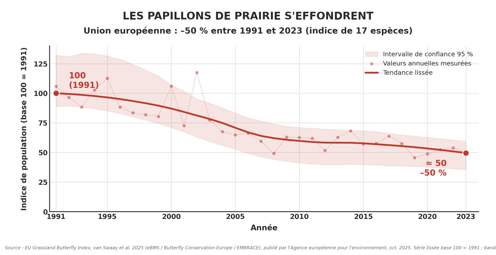
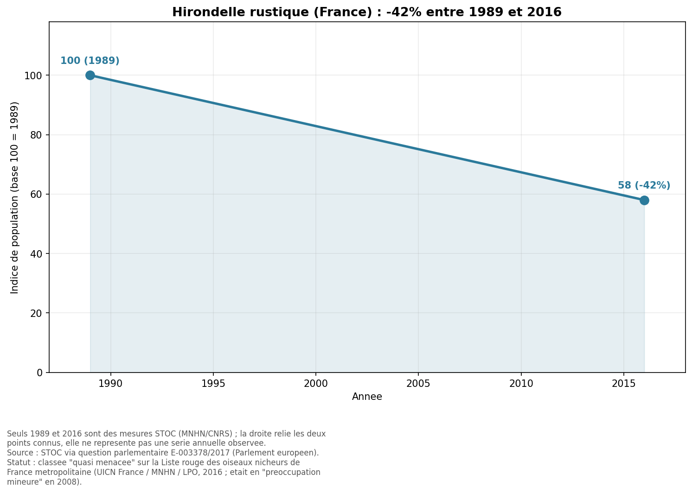
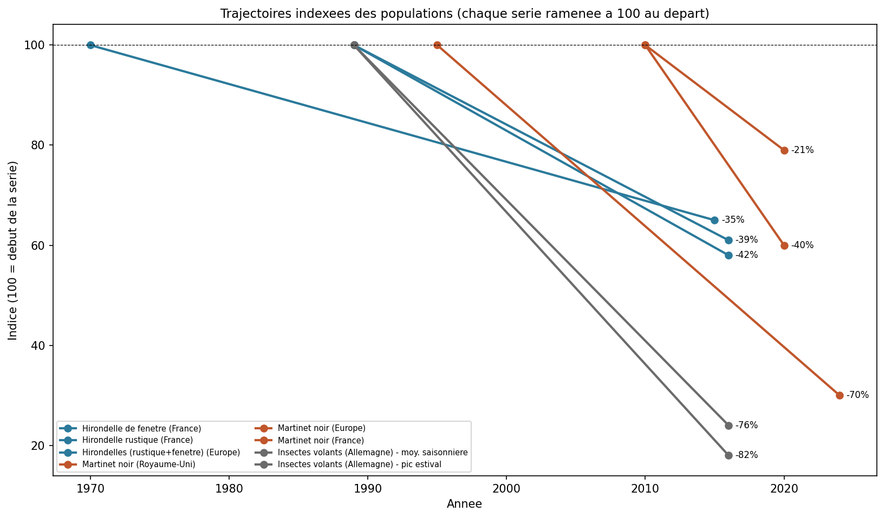

Espèces indicatrices suivies en Europe, espèce par espèce
Juillet 2026
Certaines espèces réagissent vite aux modifications de leur milieu, ce qui en fait de bons indicateurs de l'état des écosystèmes. Cette page rassemble, espèce par espèce, des indicateurs officiels basés sur des séries de comptage de terrain — pas des estimations.
L'Indice des papillons de prairie de l'UE (EU Grassland Butterfly Index, GBI) suit l'évolution de l'abondance de 17 espèces de papillons typiques des prairies dans les 27 États membres de l'Union européenne. L'année 1991 sert de référence (base 100).
Il ne repose pas sur des estimations : les données proviennent de comptages standardisés effectués sur le terrain le long de transects fixes, dans le cadre du European Butterfly Monitoring Scheme (eBMS), coordonné par Butterfly Conservation Europe et le UK Centre for Ecology & Hydrology. Depuis 1990, plus de 9 600 transects ont contribué à l'indice ; en 2024, plus de 3 800 transects ont été comptés à travers 28 dispositifs de suivi nationaux. Une grande part de ce travail est réalisée bénévolement — un exemple de science participative à l'échelle continentale.

Source : van Swaay et al. (2025, 2026), Butterfly Conservation Europe / EEA
Selon le rapport technique EU Grassland Butterfly Index 1991-2023 (van Swaay et al., 2025), l'indice est 50 % plus bas en 2023 qu'en 1991. La mise à jour la plus récente, qui prolonge la série jusqu'en 2024 avec une méthode de calcul revue, établit le déclin à 47 % entre 1991 et 2024.
Le déclin est principalement tiré par les espèces spécialistes, les plus exigeantes en matière d'habitat, dont les effectifs diminuent de façon continue depuis 2003. La Liste rouge européenne des papillons 2025 classe quatre de ces espèces comme quasi menacées dans l'UE : Erynnis tages, Lysandra bellargus, Phengaris arion et Phengaris nausithous.
Les causes documentées dans les rapports de suivi sont, selon les régions :
Le GBI est utilisé comme indicateur de suivi dans la Stratégie de l'UE pour la biodiversité à l'horizon 2030 et est mentionné dans le Règlement sur la restauration de la nature (2024) parmi les indicateurs que les États membres peuvent retenir pour les écosystèmes agricoles.
D'après le Suivi temporel des oiseaux communs (STOC), mené par le Muséum national d'histoire naturelle et le CNRS, l'indice de population de l'Hirondelle rustique en France est passé de 100 en 1989 à 58 en 2016, soit un recul de -42 %.

Source : STOC (MNHN/CNRS) via question parlementaire E-003378/2017
L'hirondelle rustique, l'hirondelle de fenêtre et le martinet noir ont un point commun : ce sont des insectivores aériens, qui capturent la totalité de leur nourriture en vol. Les suivis montrent un recul dans le même sens pour l'ensemble de ce groupe.
Pour le martinet noir, la LPO (d'après Vigie-Nature) rapporte une baisse de l'ordre de -40 % en une dizaine d'années en France. L'espèce est en déclin marqué au Royaume-Uni, où le British Trust for Ornithology (BTO) chiffre la baisse à -70 % entre 1995 et 2024, ce qui lui a valu d'être classée sur liste rouge en 2021 ; à l'échelle européenne en revanche, la tendance de long terme est globalement stable depuis 1980 (PECBMS).
Deux facteurs sont documentés pour ces espèces qui nichent dans le bâti : la perte de sites de nidification (les rénovations et l'isolation par l'extérieur bouchent les cavités des façades) et la raréfaction des insectes dont elles se nourrissent.

Le graphique ramène chaque série à 100 à son année de départ, afin de rendre les pentes directement comparables entre espèces et entre pays, malgré des périodes de suivi différentes.
Puisque ces oiseaux dépendent entièrement des insectes volants, l'évolution de ces derniers éclaire la leur.
L'étude de Krefeld (Hallmann et al., 2017) a mesuré la biomasse totale d'insectes volants dans 63 espaces protégés d'Allemagne, à l'aide de pièges standardisés, entre 1989 et 2016. Sur ces 27 ans, elle constate un déclin de 76 % en moyenne saisonnière, atteignant 82 % au cœur de l'été.
Les auteurs soulignent que cette perte doit être prise en compte pour comprendre le recul des espèces qui dépendent des insectes comme source de nourriture — ce qui est précisément le cas des hirondelles et des martinets.
Données : European Butterfly Monitoring Scheme (eBMS) — Butterfly Conservation Europe & UK Centre for Ecology & Hydrology, projet EMBRACE.